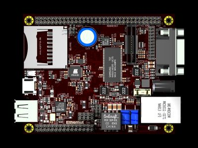

A weblog focused on interesting circuits, ideas, schematics and other information about microelectronics and microcontrollers.
E-books
Disclaimer
Because I have not tested all electronic circuits mentioned on this pages, I cannot attest to their accuracy; therefore, I do not provide a warranty of any kind and cannot be held responsible in any manner.
ethernet
EtherCard - cheap Ethernet module with ENC28J60
8. August 2010 - 14:20 — adminThe Ether Card is a basic Ethernet interface for use with the JeeLabs' Carrier Board, but you can use it in your own design (or breadboard...)

Yaler: access small devices from the Web
3. April 2010 - 14:37 — adminYaler aims to provide a simple, open and scalable relay infrastructure for the Web of Things - i.e. simple embedded devices ("things") accessible via Web (e.g. browsers).

Ethersex - IPv6 on the AVR
3. April 2010 - 11:29 — adminEthersex is a universal platform to access microcontrolers via IP protocol (including IPv6) and makes a solid base for your own development.
E-mail checker
30. October 2009 - 18:36 — adminHow to use an Arduino and an Ethernet shield together to check e-mail box via POP3 protocol...

AVR Ethernet I/O board
14. October 2009 - 16:39 — adminThis is really great board: AVR Ethernet I/O board with 2x RS232, 2x USB connector, BW composite video, Real Time Clock with battery backup, PS/2 keyboard connector, Wiz810MJ ethernet module and LCD 16x2 display.

Photo: Ben Zijlstra
Ethernut - embedded server on AVR
3. October 2009 - 16:31 — adminEthernut is an Open Source Hardware and Software Project for building tiny Embedded Ethernet Devices.

Digital Receipts System
7. May 2009 - 5:51 — adminAn interesting crossover between hardware (MCU, card reader, display) and software (PHP web server) by Cornell University students.

Microcontroller-based Web Radio
23. March 2009 - 20:30 — adminTwo simillar projects with one goal - a handy portable web radio, based on microcontroller (AVR or ARM), a VS1053 audio codec and Ethernet controller (built-in with the ARM version), with Power-over-Ethernet capability.

Propeller and Ethernet: PropNIC
15. March 2009 - 10:03 — adminAnother article about connecting Parallax Propeller with ENC28J60 Ethernet controller.